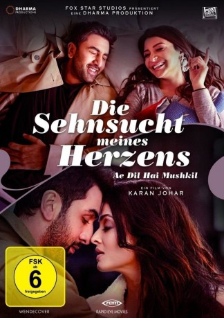

#7221 Die Sehnsucht meines Herzens - Ae Dil Hai Mushkil
 
 IMDB-Wertung: 5.8 / 10
IMDB-Wertung: 5.8 / 10  Metascore: 0
Metascore: 0 
Liebe verändert uns, Liebe lässt uns über uns hinauswachsen, Liebe geht über den Tod hinaus. Zufällig treffen die freiheitsliebende Alizeh und der bodenständige Ayaan in New York aufeinander. Gemeinsam machen die ungleichen Freunde die Stadt unsicher, doch Ayaan verliebt sich heimlich in Alizeh. Diese kehrt aber in die Arme ihres Ex zurück und erkennt zu spät, dass dies der falsche Weg war...
Jahr: 2016
Dauer: 155 Minuten
FSK: 6
Land: Indien Studio: Alive Vertrieb und MarketingTonspuren:
Untertitel: Deutsch,
Auflösung: 1080p (1920x808) Größe: 8960 MB
Genre: Drama, Musik, Liebe, Musical
Regisseur: Karan Johar
Drehbuch: Karan Johar
Soundtrack:
Darsteller:
- Aishwarya Rai Bachchan als Saba
- Ranbir Kapoor als Ayan Sanger
- Anushka Sharma als Alizeh
- Fawad Khan als Ali
- Lisa Haydon als Lisa D'Souza
- Imran Abbas als Dr. Faisal
- Farah Ahmed als Bollywood Dance Class Dancer
- Lee Kemp als Student
- Alia Bhatt als DJ at Silent Disco , uncredited
- David Broughton als Airport Passenger , uncredited
 Daniel Eghan als Nightclubber , uncredited
Daniel Eghan als Nightclubber , uncredited Shah Rukh Khan als Tahir Taliyar Khan , uncredited
Shah Rukh Khan als Tahir Taliyar Khan , uncredited- Elizabeth Mannering als Concert Rocker , uncredited
- Lora Moss als Concert Rocker , uncredited
- Halima Nagori als Bollywood Dance Class Dancer , uncredited
- Kabir Singh als Main Band Member , uncredited
- Faith Tarby als Silent Ballroom Dancer , uncredited
 Matt Townsend als Posh Restaurant Diner , uncredited
Matt Townsend als Posh Restaurant Diner , uncredited Elena Valdameri als Jazz Club Goer , uncredited
Elena Valdameri als Jazz Club Goer , uncredited- Pooja Mehta als Bollywood Dance Class Teacher
- Cru Fox als Ayan's Main Bandmembers - Lead Guitarist
- Jamil Ahmed als Drummer
- Phyl Cashman als Bass Guitarist
- Timea Gazdag als Keyboards
- Yohan Contractor als Video Recorder
- Byron als Ayan's Additional Bandmembers - Violinists
- Yolita als Ayan's Additional Bandmembers - Violinists
- Niccolo als Ayan's Additional Bandmembers - Violinists
- Samara als Ayan's Additional Bandmembers - Violinists
- Carl als Ayan's Additional Bandmembers - Violinists
- Silas als Alice in Wonderland
- Leandro als Alice in Wonderland
- Alex Gardner als Paramedics
- Becky Nixon als Paramedics
- Kaushal Kapoor als Alizeh's Father
- Sukanya Dhanda als Alizeh's Mother
- Shweta Singh als Alizeh's Sisters
- Hezal Tyagi als Alizeh's Sisters
- Preena Jhamb als Alizeh's Sisters
- Abdul Hakim Joy als Concert Rocker
- Christopher Marsh als Restaurant Guest
- Kaushal Odedra als Trumpet Player
- Chanelle Sadie Paul als Club Back Up Singer
- Emily Wood als Elf
 Sofia Abbasi als Posh Restaurant Guest / Nightclubber , uncredited
Sofia Abbasi als Posh Restaurant Guest / Nightclubber , uncredited Manoj Anand als Wedding Dancer / Concert Rocker , uncredited
Manoj Anand als Wedding Dancer / Concert Rocker , uncredited- Anushka Arora als Wedding Dancer , uncredited
 Claire Ashton als French Language Student , uncredited
Claire Ashton als French Language Student , uncredited Raj Awasti als Bollywood Dancer , uncredited
Raj Awasti als Bollywood Dancer , uncredited- Richard Banks als Bollywood Dance Class Dancer , uncredited
Datei: X:\2016(N-Z)\Sehnsucht meines Herzens - Ae Dil Hai Mushkil, Die (2016, FSK6, 1920x808).mkv seit 09.10.2017
Festplatte: HD 2016(A-Z)
 Es gibt insgesamt 182 Filme in der Gruppe '2016(N-Z)'
Es gibt insgesamt 182 Filme in der Gruppe '2016(N-Z)'